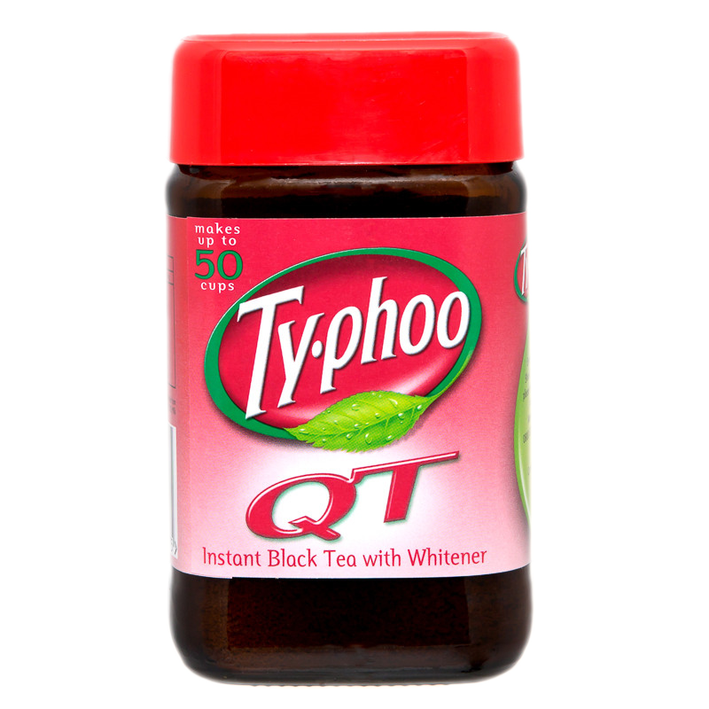
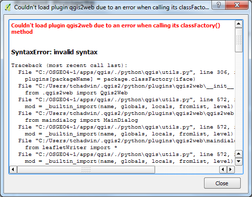
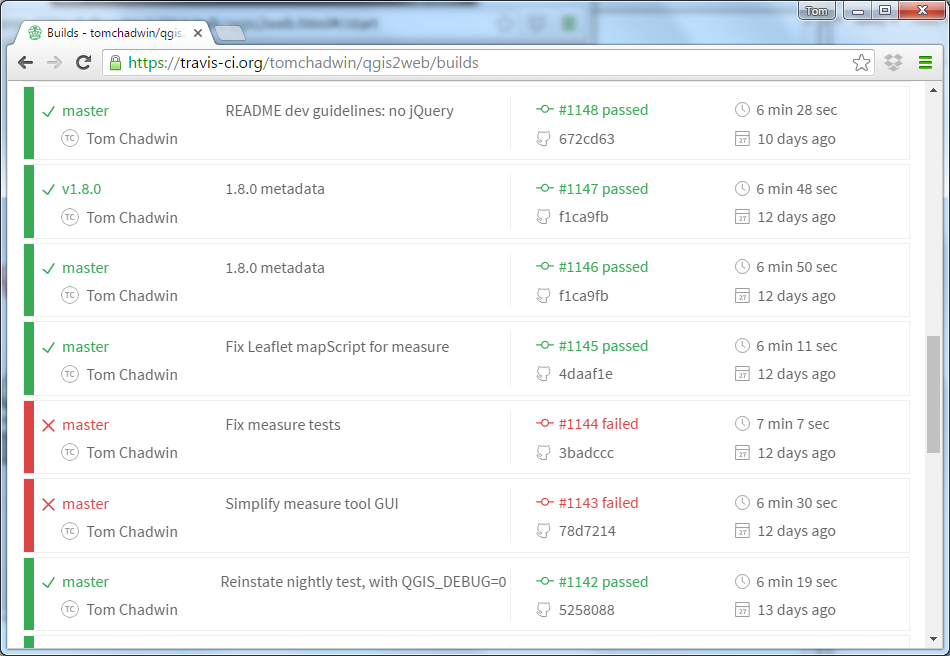
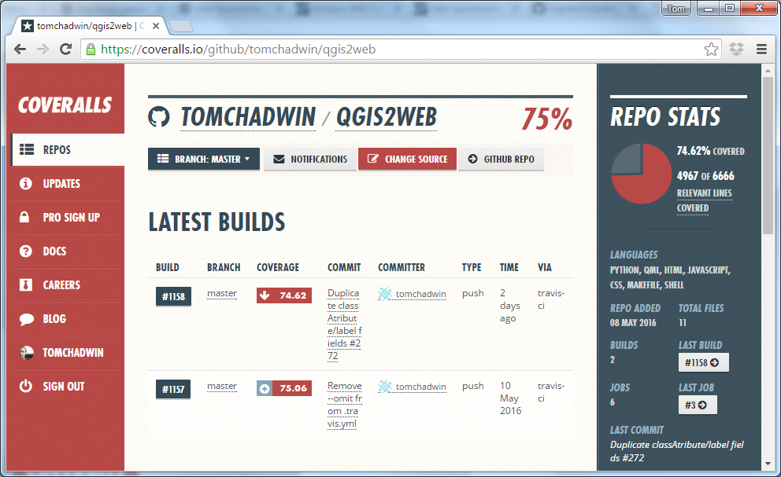

qgis2web:
the code
behind webmaps
without code
I am not a
geographer
I am
not a
GIS Officer
I am
not a
developer
I do like the
web
I do like
maps
I do not
like bad
software
I work
for a
National Park
15 years ago, government told us to make webmaps
We had MapInfo...
...and lots
of PDFs
National
Parks
work together
They bought
MapXtreme...
...at vast
expense
But the money
ran out...
so we tried...
open
source
- form-based
- difficult to maintain (eg GeoServer and PostGIS data out of sync, command-line ogr2ogr)
- we had no knowledge of technologies
- told by developer not to upgrade the component parts
- written for us, and while devs intention was to
get others to use it, only ever really used by
us, therefore:
- no wider use
- no support
- no growth
- no momentum
- no community

qgis2leaf

qgis-ol3
qgis2web
Paolo Cavallini (QGIS PSC) proposed, Riccardo and Victor agreed, I took it on.
qgis2web makes webmaps by extracting information from QGIS and writing it out as HTML, CSS, and JS.
What did I have to learn?
QGIS API


OpenLayers 3





Why do
all this?
It's fun!
What are the rewards?
It's used for something important: Projet Espace OpenStreetMap Francophone - Ivory Coast and Benin, with OpenStreetMappers from:
- Togo
- Burkina-Faso
- Mali
- Niger
- Senegal
Thanks to
everyone
- QGIS, Leaflet, OpenLayers
- Riccardo Klinger, Victor Olaya, Luca Casagrande
- Contributors: Matt Walker from Astun here today, Akbar Gumbira, Ed Boesenberg
- QGIS dev list/Gitter: Matthias Kuhn, Nathan Woodrow, Nyall Dawson
- National Parks, including my own, and Matt Travis here today from Dartmoor
- Users/bugspotters
- FOSS4GUK
- You, not least for your patience
Thank you
Questions?